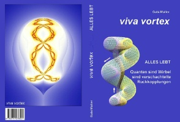

 |
AKTUELL: Stand 5/2017: Zum Buch Viva Vortex von Gabi Müller mit vielen Leseproben |
Qualitatives Torkado-Modell
(Hypothesen und Studien zu freien 3D-Schwingungen)
raum&zeit-Artikel
Gabi Müller 2004: hier, 2007: Teil 1 Teil 2 Teil 3 Text Seele
Solider Nachweis von Feinstofflichkeit durch Dr. Klaus Volkamer Teil 1 Teil 2
0 |
1a |
1b |
1c |
2a |
2b |
2c |
3a |
3b |
4 |
5 |
Translation Google-English
Neue Version (aktuell verbessert, noch im Aufbau)
Fragen, und deren Beantwortung (mit Fortsetzung in weiteren Links)
Zusammenfassung (älter)
Elementar-Resonanz
Inhalt:
1 Was ist ein Torkado ?
Torus und Ringspule
Inverser Torus
Kräfte und Ladungen in Ätherflüssen
Die Entstehung eines Torkado
Torkado-Applet mit Drehimpulserhaltung?
Nahfeld, Fernfeld und Skalarwellen
Kritik an den Maxwellgleichungen
Abschnitte 2 bis 4: Ätherbasierte (wilde) Hypothesen2 Pole und Bewegung
Was ist ein Atom ?
Quantisierung
Diamagnetismus
Spannung, Strom und Supraleitung
Kern- und Teilchenbeschleuniger
Masselose Teilchen3 Isotope und Transmutation
Mehr zu Äther
UrAtome
Masse
Raum
Zeit
Die Entstehung von Drehträgheit im Festkörper
Halleffekt
Skineffekt und Supraleitung
4 Was ist eine Sonne ?
Gravitation und Fran de Aquino
Gravitationswellen
Ideale Energie-Übergabe bei Faktor Drei
Die Galaxis als Atom
Das Sonnensystem als verschachtelte Schwingkreise
Kippwinkel zwischen Dreh- und Magnetfeldachse
5 Die zwei Naturrichtigen Bewegungen
Beipiele: Magnet, Marinov-Effekt, Würth-Technik
Experimentelle Belege für die Elementarresonanz
Schlusswort
QuellenZu Experimente-Links, die die Torkado- oder die Äther-Hypothese stützen
Einleitung
Wenn es um Freie Energie (FE) geht, denkt jeder gleich an 'perpetuum mobile'.
Das ist aber falsch.
Alle FE-Geräte lassen erkennen, daß die Energie nicht aus dem NICHTS kommt. Sie kommt nur einer nicht genau erkannten Quelle.
Es gibt Geräte, die offenbar mit der Gravitation wechselwirken. Aber sie bewegen sich nicht einfach nur nach unten und nach oben oder in einer Ebene. Sie rotieren im Raum und besitzen mindestens zwei getrennte Rotationsachsen, die Bremsphasen und Beschleunigungsphasen erzeugen. Eine geschlossene, sehr flache Spiralwicklung um einen Torus kann als Modell erster Näherung dienen. Solch eine Bahn führt während der Energieaufnahme nach unten UND zur Seite, und es ist i.A. keine Symmetrie dabei. Der nach unten führende Weg ist länger, flacher und beschleunigt (Außenhälfte des Torus), der nach oben führende Weg ist steil, kurz und weniger gebremst als vorher beschleunigt (Innenteil des Torus). Warum 'weniger' gebremst, wird im folgenden Text erläutert.
In flüssigen Systemen bilden sich kaskadenförmige Unterstrukturen mit immer neuen, kleineren exzentrisch drehenden Walzen. Charakteristisch ist die beim Einschwingen zunehmende Zahl der Drehvektoren. Für hierarchische Systeme, die nichtverschiebbare Drehvektoren in sich tragen, gibt es derzeit noch keine analytischen Darstellungsmöglichkeiten, so dass auch keine entsprechenden physikalischen Erhaltungsätze aufgestellt worden sind.
Der sogenannte Pirouetteneffekt (bei Radienverkleinerung in x-y-Ebene) tritt fast nicht auf, wenn das Gebilde dreidimensional ist und der Bahngeschwindigkeitsüberschuss in die v-z-Komponente ausweicht. Die Winkelgeschwindigkeit bleibt konstant trotz Radienverkleinerung. Ein 'Nach-oben-Schwingen' beim kleineren Radius, entgegen einer äußeren Kraft, wird damit erleichtert, während das 'Nach-unten-Fallen' bei dem größerem Radius das Gesamtsystem beschleunigt (offenes System). Es wird damit Energie hineingepumpt, die den Raumwirbel trotz Verluste in Gang hält.
In der Quantenphysik (Spektren) wird noch Spin- und Bahndrehimpuls des Elektrons unterschieden, man kennt dort auch die exakte Ausrichtung zum äußeren Feld, ohne die Brücke zum hierarchischen Flüssigkeitswirbel zu schlagen, wie hier im folgenden Torkado-Text.
Darüber hinaus scheint das Gravitationsfeld nicht statisch, sondern dynamisch zu sein, das heißt, aus asymmetrischen Schwingungen zusammengesetzt zu sein, die nur stationär als konstant erscheinen. Die dem Schwerefeld entgegengerichtete Halbwelle kann technisch gesperrt werden durch zeitlich-resonante Bewegung im kürzeren aufsteigenden Bahnabschnitt, nicht nur als mechanische Schwungmasse, sondern auch bei elektromagnetischen Anwendungen, wo man resonante Vibrationen in Spulenkernen oder Dielektrika erzeugt.
Dieser Text von Gabi Müller steht auf: www.torkado.de/torkado.htm
Meine Email-Adresse: info@aladin24.de
Home
Seit 04.10.2010: